Building The Traditional Hewn-Log Home
A MINI MANUAL
by David Petersen
July/August 1985
Whether you're looking for an inexpensive first home, a rustically luxurious vacation/hunting/fishing lodge, or a retirement cottage than makes a lasting statement about who you are, master logsmith Peter Gott will-in this manual-teach you the basic techniques you'll need to make that dream come true
The first people to erect permanent log structures were members of prehistoric Baltic and Scandinavian tribal societies whose homelands were blanketed with dense forests of tall, straight conifers. It was also the Scandinavians who developed the technique of hewing-the squaring of the sides of logs to provide flat walls. And it was they-Swedes and Finns, to be exact-who introduced this rugged, practical form of shelter to the Americas in 1638, at the first and only purely Scandinavian settlement in the British colonies, appropriately named New Sweden (in what is now Delaware).
Over the next few decades, as New Sweden came under the control of first the Dutch and later the English, the Scandinavians' construction techniques were tossed into the cultural melting pot that would soon boil over to become the United States of America.
A variety of more sophisticated forms of abode passed in and out of style as America matured, but the log cabin remained common-especially in the mountainous states-through the early 1930s, after which relatively few new log structures were built. Consequently, a possibility arose that the last few hand-tool-wielding log craftsmen might be allowed to go to their graves with their unique knowledge unshared.
Fortunately, concurrent with the New Frontier visions of the Kennedy era, a number of Americans-most of them young in years, but a few youthful only in spiritheaded back to the land in hopes of finding a lifestyle that would prove to be simpler, as well as more wholesome and meaningful, than anything available in the increasingly impersonal techno-industrial urban culture.
And so, in a migration beginning in the early 1960s, a select group of Americans began moving back to the land . . . and that journey often resulted in their settling into practical, inexpensive, easy-to-construct, owner-built log dwellings.
THE MAKING OF A MASTER
In the vanguard of that early-sixties movement was a young man possessed of a keen interest in absorbing, preserving, and passing along the folk wisdom of hewn-log building. He embraced his task with the energy born of love, and in the course of a quarter century he has not only realized his goal of keeping alive the old ways of building with logs and hand tools-he's actually managed to elevate the oncevanishing craft to the level of art.
Peter Gott and his wife, Polly, moved to the Smoky Mountains in 1961, after attending Cornell University in Ithaca, New York. Inspired by Pennsylvania log builder Daniel O'Hagan (to whom Peter is quick to give credit for much of his own timber-working expertise), the Gotts purchased 40 acres of raw mountain woodland and set to work building a log cabin and creating a self-sufficient homestead in the manner of the early pioneers. They studied antique cabins and learned from neighboring old-timers about the tools and methods that had been used to build them. They felled the trees for their cabin with a crosscut saw, dragged them out behind a mule, hewed the logs with a broadax, hand-split oak shingles for the roof, and built a fieldstone fireplace and chimney.
During the past 24 years, Peter, Polly, and their children, Susie and Tim (both now grown), have cleared planting fields behind draft animals, raised a menagerie of homestead livestock, built several outbuildings of hewn timbers, become one of the finest family bluegrass bands around, and generally enjoyed the good life.
Peter has also built a number of log houses for others, gradually perfecting and modernizing his methods. He now does most of the cutting work with chain saws, but carefully retains the appearance and precise fitting usually associated only with traditional hand-tool building methods. He has also developed techniques that enable a small crew to construct any size log building with lightning speed; all preparatory work, such as hewing and notching, is done on the ground, so that when the logs are lifted into place on a wall they fit together so snugly that a cigarette paper can't be slipped between the corner joints.
Today, Peter Gott is putting his knowledge to work by teaching workshops in the techniques of traditional hewn-log construction. He also contracts his skills to log home fanciers who can't or don't choose to do their own building (though they often pitch in to help).
A DREAM REALIZED
Architecturally modern solar and earth-sheltered dwellings are playing an increasingly important role in today's energy-conscious housing movement. And rightly so. Still, no other type of shelter, no matter what its practical or technological virtues might be, is likely to replace the owner-built log home as the centerpiece in the dreams of many-possibly most -back-to-the-landers. (And, of course, these structures also fit well into the fantasies of people needing a vacation cottage or retirement house!)
I've long been one of those log cabin dreamers, so when I heard last fall that Peter Gott would be conducting a weeklong log-building workshop under the auspices of the Nantahala Outdoor Center in the mountains of western North Carolina, I wasted not a moment in signing up for the event. As it turned out, a score or so classmates and I were a diverse and inexperienced lot-but we were united by a shared desire to learn the skills Mr. Gott was there to teach. Together, under the guidance of Peter and his two skilled assistants, our motley crew of rank amateur log workers erected the pen (four full-height walls complete with door and window openings) as well as the ceiling joists and rafters of an attractive log house. And we did it in just seven days.
The highlights of that hands-on learning experience-fleshed out through a series of instructional visits with Peter both at his home and at the construction sites of a brace of his cabins-in-progress-are presented here to help hasten the realization of your log cabin dreams. That's not to say this mini-manual includes all you'll need to know in order to put up a log home (even most books making that boast fail to come through). But it will provide you with a thorough summary of the main points, as taught by Appalachia's master logsmith.
THE BOTTOM LINE: A SOLID FOUNDATION
Because of the tremendous load-bearing capacity of solid timbers, laying a continuous foundation for a log cabin is, in most cases, unnecessary. Of course, that's not to say that it's wrong to opt for a continuous foundation-you may find yourself forced to do so by stringent building codes or unusual terrain. Or you may just prefer to do it that way. But since this discussion is concerned primarily with the more traditional and economical methods of log building, we'll sidestep talk of preparing a continuous foundation and concentrate instead on the corner pillar technique.
To summarize in advance, a small log cabin can be perched safely on just four solidly built corner pillars. (If a wall exceeds 14' or so in length, an additional support at the midpoint will help keep the sill log from sagging.) Each pillar rests on a foot-thick concrete slab (footing) poured in the bottom of a hole dug down to solid ground and below frost line. A masonry pillar of flat native stones bonded together with mortar is then built up at least a foot above ground level and capped with a sheet metal pest-and-moisture barrier. Finally, the hole around the pillar is filled in with packed earth.
The two largest and straightest logs (often of a more rot-resistant variety of wood than the wall timbers) are then laid atop the pillars to serve as sills. (Since the walls of a log cabin are locked together at the corners, there's no need for foundation-to-sill anchor bolts except in tornado country or if required by local building codes.) Floor joists, which can be of milled lumber or small logs flattened on top, are then set in notches in the sills. Subflooring can be of milled boards, plywood, or-an old-timey alternative-puncheons (large logs halved longitudinally and laid flat side up), and is generally put down before work begins on the pen. The ends of the first two (bottom) wall logs are notched into the tops of the sill logs, and the pen goes up from there.
A CLOSER LOOK AT THE BOTTOM LINE
Before excavating and erecting foundation pillars, the site must be prepared and the four corners laid out, leveled, and squared.
When the site is ready, temporarily mark the four corners with wooden stakes. The stakes should be placed where you plan to locate the outer corners of the four foundation pillars. (The rule of thumb here is to make the pillar tops twice the width of the planned wall log thickness, and the footings twice the width of the pillar tops.)
When the first corner stake is in place, use a magnetic compass to orient the first wall, and a steel tape to locate the second corner stake. Rather than stringing the tape along sloped ground, which would throw your measurements off, use a plumb bob to make all wall measurements along a level plane. Now use the magnetic compass and a framing square to get the angle for stake number three, measure off the wall length, and drive the stake-then return to stake number one to take your angles and measurements for the final corner.
To check the square of the corner stakes, measure diagonally from stake number one to stake number three, and from stake number two to stake number four. Recheck your angles and distances and readjust the stakes until the two diagonal measurements are exactly the same, and you've got the outer corners of your cabin.
To fine-tune the layout, erect batter boards a few feet behind each of the corner stakes. A batter board consists of three large stakes driven into the ground to form a right triangle connected with two horizontal ledger boards, which serve to steady the stakes and anchor the string you'll be using to square and level the foundation corners. The ledger boards should be leveled, with their tops positioned at the height to which you plan to build the foundation pillars. Level the first ledger board and nail it to the stakes. Mark the tops of the other three corner stakes using a clear plastic garden hose filled to within a few inches of each end, or a line level, or a transit. Finally, nail the rest of the ledger boards to the stakes, using a spirit level to check each one.
Now outline the foundation by connecting the four batter boards with string. Use a small plumb bob to center the strings over the four original corner stakes, then anchor the strings in place by tying them to small nails driven into the sides of the ledger boards.
With this arrangement, both the corner stakes and the strings that cross above them can be removed in order to excavate the pillar holesthen the strings can be replaced on their nails as guides for locating the positions of the outer corners of the pillars, and for leveling the pillar tops.
DIGGING IT
In frontier days, many log cabins rested on dry-stone pillars (that is, no mortar was used to bond the stones together) erected on the surface of the ground. Thus, when the soil heaved and sank with winter's alternating freezes and thaws, the cabins "floated" with the rise and fall of the ground. That technique is fine when there are no water or sewer lines that the floating action could rip out of the ground, but it's not so good if you plan to install plumbing.
To avoid the ill effects of frost heave, determine the maximum freezing depth for your area (one to three feet in all but the coldest parts of the country) and excavate the foundation pillar holes deep enough so that the bottoms of the foot-thick concrete footings that support the pillars will be well below the frost line, or resting on bedrock,whichever comes first.
Collect the flattest fieldstone slabs you can find, and mortar the largest ones to the footings at the bottom of the foundation holes. Use progressively smaller stones as the pillars rise, bonding them all together with mortar. When the mortar has set, fill in the holes around the pillars with packed earth.
For the metal cap at the top of each pillar, use thin aluminum sheeting that's a few inches wider than the pillar. (To prevent injury to human or beast, bend the four edges down and round off the sharp corners, or bend them up and nail to the undersides of the sill logs.) These shields prevent rodents, snakes, termites, and other pests from climbing the pillars and entering the cabin, and keep the pillars from wicking ground moisture up to rot the sill logs.
ACQUIRING LOGS
While most books dealing with log construction recommend buying or cutting timbers during winter and allowing them to dry for six months to a year before building, Peter prefers the traditional method of harvesting logs in autumn and using them almost immediately-green. There are several good reasons for this.
First of all, green logs, while admittedly heavy, are also soft and easy to work, especially with hand tools. Furthermore, dried logs may develop splits that will hinder proper marking, notching, and joining. Finally, individual logs tend to twist as they dry-but if they're locked into a wall, they ain't going nowhere.
If you're buying your logs from a mill, you can count on their being green unless you specify (and pay extra for) dried timbers.
ALL LOGS ARE NOT CREATED EQUAL
Which species of trees yield the best building logs? Well, "best" depends on the geographical region in which you live and the kinds of trees found there. And it depends on your budget. In general, most softwoods are superior to most hardwoods for timber construction. (Peter's favorites are white pine, yellow pine, oak, and tulip poplar, in that order.)
No matter what species of tree you decide on, search out long, straight, largely knot-free specimens of approximately equal diameter-or ask for such logs if you're buying them. If you want cabin walls with a 6" hewn thickness, the tips (the smaller, top ends) of all your logs should be at least 9" in diameter.
If you're buying milled logs, keep in mind that log length can dictate how you build, and vice versa. If you choose to build full-length walls and cut window and door openings only after the pen is completed, all of your logs will have to be full wall length (two short logs can be spliced together, but too many splices can weaken the structure). But if you plan to incorporate door and window openings as the walls are raised, you can make use of logs in a variety of lengths. (Most mills can handle logs up to 18' or 20' in length.)
CAN YOU AFFORD TO BUY YOUR BUILDING LOGS?
Twenty-four years ago, it cost Peter and Polly Gott $700 to build their beautiful little one-and-a-half-story cabin-most of that went for milled tongue-and-groove flooring and windows-and Peter tells of an elderly neighbor who built a similar structure 50 years earlier for a whopping $6! Today, the cost of purchasing two-sides-milled logs for the average small cabin is around $3,000.
Sawmills sell logs by the board foot, with the price per foot varying according to the variety of wood, the diameter of the logs, the amount and type of milling you want done, delivery arrangements, and other variables. To determine the approximate cost of purchasing logs for the particular structure you have in mind, add up the total square feet of wall area, then multiply by five to get the approximate board footage (a board foot equals a square foot of lumber an inch thick). Next, check with your local lumber mill to determine the price per 1,000 board feet for timbers milled the way you want (1,000-boardfoot lots are what most lumber mills are accustomed to quoting prices for), then divide that price by 1,000 and multiply by the number of board feet you need.
PRESERVATIVES AND FINISHES
Unless you plan to build with an extremely soft and rot-prone wood (such as aspen), there's really no need to apply a preservative. You can virtually eliminate rot in your lifetime by using the most rotresistant wood you can get your hands on for the two sill logs and resting them atop a sheet metal-capped stone or concrete foundation that's at least a foot above the ground (18" is better), and by thoroughly peeling the logs and providing enough roof overhang to protect the walls from frequent soakings by rain and snow. If you feel you must use a protective coating, opt for a clear, low- or nogloss sealer (such as linseed oil or polyurethane) and steer clear of potentially hazardous chemical wood preservatives.
TOOLS OF THE LOGSMITH'S TRADE
T he chain saw is the single exception to Peter Gott's "traditional hand tools only" rule. Even if you buy your timbers milled and ready to notch, you'll find that a chain saw is a real time-saver for cutting those notches, as well as for expediting numerous other construction chores. And if you plan to harvest your own logs, you'll need a muscular chain saw and the knowledge to use it safely and maintain it.
In addition to a good chain saw, several specialized tools are required for harvesting, handling, and working logs. Fortunately, most all of them are rugged, relatively inexpensive hand tools. You may already own some or all of the more common of these-chalk line, steel tape measure, level, claw hammer, brace and bits, handsaw, dividers, framing square, and sawhorses-since they're used for virtually every type of construction.
Additionally, you'll want to beg, borrow, or buy the following traditional log-working hand tools:
Single-bitted ax: This handy chopper has many uses in log building, as well as being a homestead necessity.
Double-bitted ax: The superior balance of the double-bitted ax allows for more precise cutting than is possible with the common (singlebitted) ax. You can sharpen one edge of a "two-bit" to a thin taper for fast, precise cutting, while giving the other blade a blunter taper that will hold its edge better for rough cutting, perhaps when there's a chance you'll be chopping into dirt or buried rocks.
Broadax: This ancient, wicked-looking tool was developed specifically for squaring and shaping logs. If you plan to hew your cabin timbers by hand, a broadax-with its short handle and wide, heavy, specialized blade-is indispensable. Since the broadax is held flat against a log for hewing, the blade is beveled only on the side facing away from the work. Additionally, the handle of a broadax angles away from the head (broadaxes come in right- and left-handed models) to save your knuckles from injury.
Draw knife: This tool is used primarily for shaving the bark from logs. It consists of a blade (18" is an average length) with tangs on each end bent back and fitted with handles. The blade is beveled on its top edge and flat on the bottom surface, where it meets the wood. The draw knife is held perpendicular or at a slight angle to the length of the log being worked and, as its name implies, is drawn toward the user.
Adz: This implement is a sort of hoelike chisel. It has many uses in an expert's hands-including hewing, smoothing, and shaping notches.
Froe: In frontier days, a blacksmith would make this splitting tool by bending a 3' (or so) length of 1"- to 2"-wide strap iron into a U shape, forming an eye at the bottom of the U to accept a short hardwood handle, and hammer-welding the two sides together to form a heavy blade that was then beveled and sharpened on its bottom edge. The froe, driven by a hardwood mallet, has many uses, and is indispensable for splitting out flat boards and riving (splitting) shingles.
Mallet: Make one yourself by cutting a rectangular or cylindrical chunk of the toughest hardwood you can find, then boring a hole through its center to accept a short, sturdy hardwood handle. Or do as Peter does (in five minutes or less), and cut a one-piece mallet by "whittling" both head and handle from a single piece of hickory or dogwood . . . with a chain saw.
Slick: This is a giant, flat-bladed chisel with an overall length of 3' or so. It's pushed by hand (never driven, not even with a mallet), to smooth or remove wood. A slick is handy indeed for the final fitting of corner notches.
Log dog: Picture a giant staple made from a 2' (or longer) length of iron rod with both tips bent down and sharpened. Log dogs are used to anchor a timber in place, on sawhorses or atop other logs, for working . . . drive one end into the project timber and the other end into the supporting structure to keep the log from wobbling or rolling.
Peavey: This lumberjack's helper consists of a sharp metal spike attached to the bottom of a long handle, with a hinged hook swinging from the point where the spike is joined to the handle. A peavey gives you the leverage to turn and roll large logs without stooping. It's a real back-saver. (A similar tool, the cant hook, has a blunt end rather than a spike. The cant hook has a slight edge over the peavey when moving closely stacked logs-but a peavey is the best overall choice.)
Timber carrier: Imagine a pair of giant ice tongs suspended from a long, horizontally held handle. Two people-one standing on either side of the log to be transported-center the timber carrier over one end of the log, position the hooks on the sides of the log, and lift. As the timber's weight is assumed by the carrier, the hooks close and dig in to hold the log securely. Two strong workers can haul a moderately large log by lifting one end with a timber carrier and allowing the other end to drag on the ground. Extremely large logs may require two timber carriers and four people . . . or even three and six.
[EDITOR'S NOTE: For more information on homemade log-working tools, see "Three Tip-Top Timber Tools, " page 80.]
HEWING: A SQUARE DEAL
Many of today's kit homes use logs that are flattened on all four sides at the sawmill-the product resembling long railroad ties. Traditionally, however, logs were hewn only on the two faces, with the tops and bottoms left rounded. Peter prefers the traditional two-sided logs, explaining that flattening only the faces saves hewing time, provides maximum rise from each round (the four logs that compose a layer all the way around a log wall), and makes for easier and more efficient chinking.
For those owner-builders who have neither the time nor the inclination to hew by hand, and who are too short on cash to have the logs commercially milled, a third possibility is to use a chain saw milling attachment-such as the Haddon Lumbermaker or the Beam Machine (both under $50), or the more efficient (and more expensive) Alaskan Lumber Mill. But be forewarned that milling with a chain saw requires a saw with a large power head and, preferably, a special ripping chain-plus lots of hard work.
PEELING
There are several good reasons to skin a log before hewing or otherwise working it. For one thing, the bark will fall off eventually anyhow. Meanwhile, its uneven texture will make snapping clearly visible chalk lines all but impossible, bugs will burrow under it to gnaw on the sapwood and deposit eggs, moisture will become trapped beneath it to prompt mold and rot, and the folds and pockets in the bark are likely to contain grit picked up during felling and hauling-grit that will dull and damage edged tools.
Trees cut in summer, when the sap is moving, can be barked with a long-handled, spadelike instrument called a peeling spud. But Peter recommends harvesting your building timbers in late fall or early winter, when the sap is dormant, and peeling them with a draw knife. Here's how it's done:
Alter a couple of sturdy sawhorses for log work by cutting shallow Vs into their tops to keep round timbers from rolling. (You can further steady the works by using log dogs.) With a log in place on the horses, fetch your draw knife.
To peel, stand to one side of the timber and draw the tool toward you while holding the blade at a slight angle to the log's length. Slice deep enough to get through the bark and the soft, wet, yellowish layer that lies just beneath it, down to the harder, lighter-colored wood. Rotate the log as you work, removing any projecting knots with an ax or chain saw. Once you master the peeling technique, the bark will come off easily in long strips. As you peel the logs, stack them on scrap wood so that none touch the ground.
MEASURE TWICE, CUT ONCE
For the next several operations you'll need a couple of lengths of short, fat scrap log to serve as hewing supports-their bottoms sawn fiat for stability, their tops notched to hold the project log a few inches off the ground. Position a peeled timber on the supports so that the crown (bowed side), if there is one, faces down. (The crown will face up when the log is notched and placed on the wall.)
Now you're going to determine the log's centerline. It's a matter of eyeballing-you're looking for an imaginary line that represents the center of the log along its full length, not just at the end you're sighting from. (This line rarely passes through the exact center of the heartwood.) Peter hangs a plumb bob at one end of the log and uses it as a sight.
Next, using a level as a straightedge, draw a vertical centerline down the end of the log. (If the end is cut at a taper, you may have to trim off just enough wood to square it.) Then move to the other end of the log and repeat the sighting, centering, and marking procedures.
Time now to mark the actual hewing lines. In order to assure that both hewn faces of a log are the same height (top to bottom), it's critical that an equal amount of wood be left on each side-which is why we measure out from a centerline to establish hewing lines.
Start by measuring half the planned wall thickness out from either side of the centerline and cutting small notches where those measurements meet the top edge of each end of the log. For example, if you want the walls to be 6" thick, measure out 3" on either side of the centerline. Use the level to extend these lines down the ends of the log on either side of, and parallel to, the vertical centerlines.
At this point you should have three vertical and parallel lines drawn down each end of the log. Now snap chalk lines to establish the hewing lines along the length of the log. The final step in hewing layout is to rotate the log 180° and snap the two hewing lines down the opposite (crown) side of the log.
JUGGLING: IT'S NOT A CIRCUS ACT
The terminology gets a little tricky along about here, so let's give it a quick run-through. In its broad meaning, the term hewing refers to the overall process of flattening the sides of a log; the initial roughshaping by notching and removing chunks of wood from the sides of a log is known as juggling; and the smoothing of the squared faces with a broadax is hewing in its specific meaning. In hewing, then, first we juggle, then we hew.
The wood to be removed from the sides of a log comes off most easily in chunks-which is why we cut notches every foot or so along the surfaces to be hewn. If you're notching with an ax, leave the project log on the scrap logs near the ground and rotate it so that the side to be notched is facing up at a 45° angle. To cut the notches, stand on the opposite side of the log so that you can swing the ax down and toward you in a normal chopping movement. Chop V-shaped notches at 12" to 18" intervals along the length of the log, cutting down to within 1/4" or so of the hewing line.
If you're notching with a chain saw, place the timber on sawhorses and use single cuts-as opposed to V notches-spaced 6" to 8" apart and penetrating to within 1/16" of the hewing line. Turn the log so that the side to be notched is facing straight up, then ease the base of the saw's bar into the wood and bring the front of the bar down gradually until the cut nears the hewing line.
With the timber notched all along its length and positioned on the scrap logs near the ground, knock out the first chunk by using a mallet or club to drive a froe or a single-bitted ax into the end of the log just above the hewing line. Now, standing on the side of the log opposite the surface being hewn, use a wide-bladed ax to split off the rest of the chunks, one at a time.
In order to make broadax hewing easier, it's necessary to cut the longitudinal fibers of the wood every few inches along the length of the log. Using an ax, strike several scores parallel to and between what remains of each of the original juggling notches. In order to cut the fibers without gouging too deeply into the wood, strike straight in rather than at an angle as you would when chopping or notching; the object is to sever the wood slightly deeper than the final plane of hewing.
With the side of the log roughly flattened by notching and juggling, and with score marks every 4" to 5" along the log (more near knots), lift the log back up onto the sawhorses and rotate it so that the crown is up.
To hew, hold a sharp broadax at waist level, with your favored hand (the right if you're right-handed) positioned close behind the broadax's head and your thumb resting along the top of the handle just behind the head (rather than wrapped around the inside of the handle, where it might get mashed). Sight down between the log and the inner face of the broadax's blade to keep blade and log parallel.
Start at one end of the log and work forward, removing a thin shaving of wood with each short, downward stroke of the broadax until you reach the hewing line. The hewn surface should be relatively flat-but there's no need to attempt to erase all traces of the notches and scoring marks.
HEWING THE SILLS
The sills-your two straightest, soundest, most rotresistant, and largest-diameter logs-should be hewn on their inner and outer faces to match the wall logs and to facilitate notching. Additionally, because the sills rest on the foundation, their bottoms must be flattened. If you're using a continuous foundation, the bottoms of the sills must be hewn (or milled) flat along their full lengths. But if the foundation consists of pillars, you need to flatten the bottoms of the sills only in those areas that will come in contact with the tops of the support columns.
Remove just enough wood from the bottoms of the sills to flatten them across their full hewn width. The tops of the sills will be notched to accept the first two wall logs, so they should be left in the round.
THINKING ABOUT NOTCHES
Let's briefly examine the three most common notches used in log construction.
The saddle notch is far and away the most popular notch for use with round logs. A half-moon-shaped notch is cut into the bottom side of both ends of each new log to conform to the curvature of the log it rests on, often with spikes holding the works together. Advantages of the saddle notch include ease of construction and a rustic, pleasing appearance. Disadvantages are a tendency toward loose corner joints and a weakening of the walls due to a third or more of the diameter of each log being carved out at the notches.
The V notch is frequently used in hewn-log construction, especiall y when working with small-diameter logs. It's a traditional notch found in many antique timber structures-and it's the notch Peter chose to use when building his own cabin (he liked its strength and appearance). However, the V notch is time-consuming and exacting to lay out and cut, so Peter recommends it only as a second choice
The half-dovetai l is the primary hewn-log notch, and we'll be discussing it at length in the following paragraphs. The half-dovetail notch offers the advantages of a traditional, attractive appearance; tight, strong corner joints that require no spiking; ease of layout and cutting (with Peter's method of working from longitudinal centerlines, the logs can be prenotched and dropped into position on the walls with little subsequent adjustment required); and a tendency for the joints to actually tighten as the structure ages.
FIRST THE MATH
In spite of the half-dovetail's complex appearance, each log end requires the cutting of only two angled notches. Viewed from the end of the log, the top notch slopes downward from the inside to the outside face-while the bottom notch slopes up and in. Both notches have the same pitch and, with Peter's method, are laid out with the aid of a template.
In the old days, half-dovetail notches were cut mostly by experience and educated guesswork. The log was lifted into position on the wall and scribed to match the log below . . . taken back down and recut . . . refitted on the wall . . . and so forth until a reasonably close fit was achieved. Surprisingly, no one ever came up with a better way to go about laying out and cutting notches-until Peter Gott came along.
The key points in Peter's unique half-dovetail notching method are [1] chalking a centerline along the length of each face of every log, and [2] using a couple of relatively straightforward algebraic formulas to determine a common depth for all the notches in a round.
Thus, instead of laying out approximate notch depths by measuring from the top and bottom of a log in toward the center, Peter lays out exact notch depths by measuring carefully calculated distances out from a centerline that's common to all four logs in a round. (Which, when you think about it, means that the term notch depth is used very loosely here; in fact, we're talking about the amount of wood left between the deepest parts of the top and bottom notches, rather than the amount of wood removed to form the notches.)
notch market for round-log
construction. The V notch is especially
suitable for use with a small-diameter
hewn logs. The half-dovetail is the
primary hewnlog notch, offering strong,
tight joints.
The beauty of taking all measurements from chalk lines snapped along the vertical centers of both faces of each log in a round is that small variations in the diameters of the logs-and even differences in the diameters of the butt and tip of each log-can be ignored. Instead, we can calculate a common notch depth (that is, the distance from the centerline to the peak of the lower notch) for each round by using a formula having three variables: [1] average log height (obtained by measuring the height of each log at its longitudinal midpoint, adding the four figures, then dividing by four to come up with the mean height); [2] the width of the chinking gap between rounds (an arbitrary figure-we'll use 1" as an example); and [3] rise (viewed from the end of a log, rise is the vertical distance from the lower edge to the upper edge of the slanted top notch).
In the formula, we'll let H represent height, C represent the width of the chinking gap, and R represent rise; we'll be solving for the common notch depth, which we'll call D.
With all that in mind, here's the formula:
D = 1/4 (H + C - R).
In English, that means that the common notch depth for a round of logs is equal to one quarter of the sum of average log height plus chinking height minus the rise of the upper notch. Again, H derives from a straightforward measuring and averaging of log heights, and C is an arbitrary figure that depends primarily on how wide you want the chinking gaps to be. (Peter uses 1 " for straight, smooth logs, and 11/2" to 2" for crooked, knotty logs.) But how the heck do we find R?
To determine R (rise), we need to know two things: the hewn thickness of the logs, and the pitch of the slanting top notch. Notch pitch is arbitrary (within limits), so long as it remains constant for all the corner notches in a structure. For half-dovetail notches, Peter prefers a pitch of 1:3-that is, a rise of one inch for every three lateral inches. (You can cut a 1:3 template from Masonite or other thin stock; a vertical leg of 6" and a base leg of 18" will give the hypotenuse-the side opposite the right angle-the desired pitch of 1:3.)
Since 6" is a common wall thickness, we'll use that figure in our example. To find R (rise), we simply divide wall thickness by notch pitch-which, in our example, would be 6 divided by 3 equals 2. (Remember the rule of one inch of rise for every three inches of wall thickness and you're in business.)
So, with R (rise) = 2, C (chinking gap height) = 1, and H (average log height) = (let's say we came up with) 11, we can work through the formula as follows:
D = 1/4 (11 + 1 - 2) = 2-1/2.
Let's do that again, this time in English: 11 plus 1 is 12, minus 2 is 10, and 1/4 of 10 is 2-1/2.
That's all there is to figuring the common notch depth for all the bottom notches in a round: The deepest part of every bottom notch in our hypothetical round will rise to 2-1/2" below the centerline.
But how do you apply that to the upper notches, which are higher on their inside faces than on their outside faces? On which face do you mark the 2-1/2"? The answer is . . . neither; the notch depth for the upper notch, since it slants down toward the outside, must be measured at the log's horizontal center point. And how do we get a ruler and pencil into the center of a log to put a mark at the 2" point?
We don't. Instead, we employ another simple algebraic formula. Since both upper and lower notches are laid out from the inside face of the log, we must mathematically extend that 2" R (rise) height from the horizontal center of the log to where it would intersect the inner face. The formula we'll use is this:
U = D + 1/2 (R).
centerline common to all four logs in a round, and
using a couple of straightforward algebraic
formulas to calculate notch depths (D and U), you
can eliminate all guesswork.
down from the inside to the outside face, while
the bottom notch slopes up and in from the
end.
Want that in English? OK: Since R is 2" (again, that's the vertical distance from the upper to the lower edge of the slanted surface of the top notch), then the amount of rise at the log's horizontal center point (halfway across) would be half of that, or 1". Thus, to adjust the upper notch measurement so that it will be accurate at the inside face of the log, we simply say that U (upper notch measurement) equals D (notch depth) plus half R (rise).
Returning to algebraic lingo, we'd have
U = 2-1/2 + 1/2 (2) = 3-1/2.
These two formulas tell us that the uppermost point of the lower notch in this round would be marked 2-1/2" below the centerline on the inner face-while the top (inner) edge of the upper notch would be marked 3-1/2" above the centerline. (Hint: When using 6°-thick logs and a pitch of 1:3, you can do away with the second formula entirely by remembering that the measurement for the upper notch will always be 1" greater than the measurement for the lower notch.)
NOTCH LAYOUT
With the headwork done, it's time for the hands to take over. To eliminate confusion when marking and cutting notches, place your sawhorses alongside the wall that will receive the timber you're working on, then position the log on the horses-end for end-just as it will go on the wall. That way you won't cut your notches upside down and backwards, as a couple of students at the Nantahala workshop did on their first try!
Here's Peter's 16-step outline for marking and cutting half-dovetail notches:
[1] Lay a log on the sawhorses with the inside face up. To determine which is the inside face, remember that the crown always goes up when a log is put in place on a wall-and that butts and tips alternate with each round.
[2] About a foot in from each end of the log, at a point that's free of any atypical bulges, measure and mark the vertical center of the inner face. To find the center, hang the short leg of the square over one side of the log and pick an inch mark that you estimate to be near the center of the face (for example's sake, let's say you choose the 6" mark), and mark this spot on the log. Now turn the square around, hang it from the opposite side of the log, and make a second mark at the same (6") line on the square. The midpoint between these two marks is the vertical center of the log.
[3] Using the vertical center marks at each end of the log as guides, chalk a centerline along the inside face of the log.
[4] For the next step, one end of the log must be square. If neither end is square, position the long leg of a framing square along the centerline and draw a perpendicular line across the face of the log a couple of inches in from the end to be squared, then extend this line around the rounded surface, using a piece of paper as a flexible straightedge. Following the guidelines, cut the end off.
[5] Hook the framing square over the squared end of the log and make a mark 9" in from the end, since we're working with a hypothetical 6"-thick log. This 9" represents the 6" notch length plus a 3" extension beyond the notch. The extension is primarily an aesthetic touch and can vary from zero to 4" or more according to taste. If we were using 7"-thick logs, we'd measure in 10", etc.
[6] Measure the proper distances (obtained with the mathematical formulas discussed earlier) above and below the chalked centerline and draw in the notches using a 1:3 triangle to attain the correct angles. (Remember that the bottom notch always slopes up and in from the end of the log, while the top notch slopes down from inner face to outer.)
[7] With a helper (or an awl) holding the 9" line of steel tape over the 9" mark on the log, measure and mark the log to its exact building length. If corner notches are to be cut on both ends of the log (ends that meet window or door openings or that are to be spliced don't receive corner notches), make a mark 9" in from the end mark you just established, so that you have a mark 9" in from each end.
[8] Use the square to draw a line across the second end, and saw it off as square as possible.
[9] Lay a level across the log (perpendicular to the centerline) at a flat, accurately hewn spot and level the log on the sawhorses by inserting wooden shims between the log and the horses. Now check the log ends and, if necessary, shave them with a slick until they're smooth and level.
[10] Use a level to draw vertical lines down both ends to aid in transferring the longitudinal centerline to the opposite (outer) face of the log.
[11] Using a 1:3 triangle and a level held vertically, draw the slope of the upper notch on one end of the log.
[12] If both ends of the log are to receive corner notches, mark the slope of the upper notch on the opposite end.
[13] If both ends of the log are to receive corner notches, hook a square over the second end and observe where the intersecting notch line falls on the inner face of the log. (It may not be exactly at the 9" mark.) Make a mental note of this measurement, then turn the log over and mark the same spot on the opposite (outer) face.
[14] Snap a centerline down the second (outside) face.
[15] Lay out the notches on the outer face. (The upper notch line on the outer face is an extension of the sloped line marked across the end.)
[16] Extend the notch lines across the rounded (bottom and top) surfaces of the log.
CUTTING THE NOTCHES
To make all but the beveled top-notch cut, Peter-a Michelangelo with a chain saw-works with the log laid flat, cutting in halfway from each side and undercutting slightly to form a concave surface. He makes the lengthwise cuts first, then the crosscuts. This method provides less opportunity for the saw to jump across the kerf and cut too deeply, and also eliminates splinters. For your first few cuts, stay away from the lines and remove any excess wood later with a slick. As your skill and confidence develop, however, you'll get to where you can cut right to the line with the chain saw.
To make the beveled top cut, insert wooden wedges between log and horses to hold the log at such an angle that the slanting guideline on the timber's end is vertical. Start the cut by easing the heel of the saw's guide bar into the wood just inside the guideline on the end of the log, then bring the nose of the bar down until it's buried about an inch or so in the wood. Now slowly push the bar forward along the line to carve a shallow guide channel. (Safety note: To avoid kickback, keep a firm grip on the saw. Make sure bystanders are at a distance, and be prepared in case the saw decides to buck up.)
When the tip of the bar reaches the end of the cut, saw straight down. Stop the cut when the bar is halfway through the log, remove the bar from the kerf, rotate the log 180°, and repeat the above steps to finish the cut from the opposite side. That way, misguided cuts will end in the center of the log, where they won't show. Any rough spots can be smoothed with a slick.
After the notches are cut-in order to achieve a proper fit and to assure that the joints will tighten rather than open as the logs season and settleuse chain saw, adz, or slick to make all the cuts except the sloping top notch slightly concave. (That is, remove enough wood from the centers of the cuts so that they're about 1/8" lower in the middle than on the outer edges.) The weight will rest on the edges of the notches, rather than across their full widths . . . and if you need to work with a notch to make it fit after you get the log on the wall, all you'll have to do is whittle down the outer edges.
FITTING CORNER NOTCHES
We'll talk about devices and techniques for hoisting logs into position in a moment. But in order to continue our discussion of notching uninterrupted, let's assume for now that the log we just notched has jumped magically into place on a wall.
To keep the walls straight as they go up, each log must be individually leveled. If it's a short log that ends in a window or door opening or a splice, start by holding a level horizontally along the centerline of either face of the log and shimming the unnotched end until the timber is level.
Any wood removed from a notch to achieve a better fit or to plumb the log is usually shaved from the top notch of the lower log rather than from the bottom notch of the upper log. To do this, insert a wedge between the upper and lower logs to hold the notch open, then use a slick or chisel to work the wood. Shave off only a little wood at a time, then remove the wedge and recheck the level and plumb of the log and the fit of the notch. Keep at it until the notch is perfect. Finally, check the joint at the opposite end of the log to be sure it hasn't been pulled out of line. (If a joint loosens up during the leveling operation, a light tap with a sledge-hammer will often be suficient to persuade it back in line.)
Now hold a level vertically against the inside face of the log to check for plumb. If necessary, run a sharp handsaw (with well-set teeth) through the joint where the inside face of the log meets the shoulder of the upper notch of the log below. Sometimes two or three passes with the handsaw will be needed to achieve a perfect fit.
DOOR AND WINDOW OPENINGS
There are two methods of creating door and window openings: [1] Build solid walls and cut the openings after the pen is up, or [2] incorporate the openings as the walls rise. For a variety of reasons (primary among them being the ability to make use of shorter logs), Peter prefers to incorporate the openings as the walls go up. (Note: This method may require temporary bracing of the walls near the openings until the timber that spans the top of an opening is in place. Further, in order to maintain wall strength, it's best not to cut openings closer than 3' or so from a corner joint.)
The traditional method of framing openings is to nail or peg dimensional lumber (2 X 6s for 6"-thick walls, etc.) directly to the ends of the logs to create a box. The drawback to this method is that as the logs season and shrink in diameter, the walls settle slightly at the corners . . . but when the ends of the logs that meet door and window openings are nailed to a rigid frame, they can't settle. As a result, the log ends will tend to pull away from the frames, gaps will open in the chinking, and perpetual drafts will plague the wonky structure's inhabitants.
To avoid this, Peter recesses 2 X 4 splines vertically into ends of the logs that meet the openings, then nails the framing lumber to the splines rather than to the logs. This arrangement allows the logs to slide up and down the splines as they expand and shrink according to atmospheric conditions.
The bottoms of the 2 X 4 splines are set in cup notches cut into the log that forms the bottom of the opening. The tops extend a few inches up into slots cut all the way through the timber that caps the opening. These cuts are made with a small chain saw. (Again, watch for kickback when boring with the tip of the guide bar.)
The actual dimensions of a nominal 2 X 4 are 1-1/2" X 3-1/2" (or thereabouts-they vary slightly), so the spline notches are cut 1-1/2" wide and 4" deep. (The extra bit of notch depth comes in handy for running electrical wiring down the inside of the wall between the back of the spline and the logs.) Here's how to cut spline notches:
Let's imagine back to where the log is still on the sawhorses, just after you've laid out the corner joint. Now measure and square the end of the log that's to receive the spline (if you haven't already done so). Make sure the log is still propped level, then measure down from the inside face and make a mark at 2-1/4" and another at 3-3/4". Using these two marks and a level as guides, draw two horizontal lines to establish the sides of the spline notch.
Now stand the log on edge and measure back 4" along the top and make a mark. Next, use a straightedge to extend the lines from the end of the log along the top (parallel to the sides), then roll the log over 180° and repeat the procedure to establish the notch outline on the bottom.
To cut the spline notch, work from the top of the log and saw down just inside the guidelines. Now roll the log over on its side and-being careful to avoid kickback-cut the bottom of the notch by holding your chain saw vertically and plunging the tip of the bar into the wood at the bottom mark. (It doesn't matter that the bottom cut will be a little wider than the notch.) To avoid coming out at the wrong place on the opposite side, stop the plunge cut halfway through, remove the bar, and finish the cut from the other side. Finally, check the fit with a 2 X 4-you should be able to slide it up and down in the notch-and use a slick or chisel to widen and dress up the slot as necessary.
Once the logs are in place on the wall, insert wooden chocks between rounds to keep the short sections of timber level from corner to corner. These chocks will be left in place even after window and door frames are nailed to the 2 X 4 splines, so they should be sturdy enough to support the load of the wall above them, and short enough not to protrude from the chinking after the mortar is troweled on.
SPLICING LOGS
Occasionally, you'll be faced with the necessity of "making" a wall-length log by splicing two shorter logs together. This is acceptable-so long as you don't allow splices in two consecutive rounds to fall one directly above the other. The simplest splice-and a very good
one-is the lap splice, wherein the two logs to be joined are notched to half thickness so that they overlap, then spiked together with four large nails or pegged with 3/4"-diameter hardwood dowels. (If you're more concerned with strength than appearance, you can join the splice with countersunk bolts rather than nails.) The overlapping legs of the splice should be at least a foot long; Peter usually goes for 16".
To illustrate, let's call the two short logs to be spliced A and B. To cut a lap splice in A (after the corner notch is laid out), measure the desired log length, mark, and saw off the end to be spliced, undercutting slightly. After checking that the log is still propped level, measure 3" down the end from the inside face and draw a horizontal line, using a level as a straightedge. Now turn the log over 180°, hook a square over the end, and make a mark 16" back along the outside face from the end. Draw a square (perpendicular) line across the log and snap chalk lines along the top and bottom edges, extending them slightly beyond the 16" mark. The rectangular block of wood that lies inside these lines will be cut out to create one leg of the splice.
1st pict. In this vintage photo from the Gott family scrapbook, Peter uses pole skids to raise the walls of their homestead cabin. Today
2nd A crew and a hoist make quick work of setting ceiling joists.
3rd In single-story structures without lofts, ceiling joists are set in cup notches and sandwiched between the top wall logs and the plates.
4th he prefers this mobile winch and derrick that collapses for transport atop his van.
But before cutting out the notch you just laid out for log A, mark log B in the same way, making sure that the notch is marked to be cut from the face opposite the notch in A. (As with laying out corner notches, the best way to keep from getting confused is to position your sawhorses in front of the wall the spliced log will be used on.
When you're ready to saw out the notches, turn the first log to be cut so that the plug of wood to be removed is facing up. The first cut should be down the guideline that represents the back of the notch. Saw halfway through the log along the second splice cut, again slightly undercutting. Turn the log on edge and, standing at the end of the log, use a powerful chain saw to make the longitudinal cut. Saw halfway through, turn the log over, and finish the cut from the other side. Finish by dressing up any uneven or rough spots with a slick, or by "brushing" (passing the bar lightly over the surface) with the chain saw.
When both logs are notched, mate them up on the sawhorses to check the fit of the splice. In all probability, even if the splice fits together perfectly, one log will be somewhat higher than the other, giving the joint a jagged appearance that will stand out on the wall like a watermelon in a tomato patch. To prevent this, align the centerlines of the two logs, then whittle the tip of the larger log down with chain saw and ax until it matches its smaller mate.
To align the two spliced logs' centerlines once they're on the wall, as well as to level the joined log along its full length and take some of the pressure off the spikes that will hold the splice together, cut a couple of wooden wedges and drive them into the chinking gap between the splice and the log beneath it. When the logs are level, replace the wedges with suitable blocks that will be left permanently in place and covered over with chinking mortar. It's a good idea to bore pilot holes for the spikes . . . but don't attempt to join the timbers until both A and B have been fitted at their respective corner joints.
RAISING THE WALLS
If you're building on fairly level ground and using logs that aren't excessively long or beefy, two strong workers can grunt the first few rounds into place by hand. But for the sake of both safety and efficiency, some sort of lifting contraption will become all but mandatory as the walls rise.
The traditional method of raising logs employed two sturdy pole skids that were long enough to be leaned up against the top of the wall at its highest projected level without exceeding a slope of 45° or so. The upper surfaces of the skid poles were peeled, smoothed, and greased-then the tip ends of the skids were beveled so that they would fit snugly up against the wall when leaned into place. (For safety's sake, the tops of the skids were sometimes spiked to the wall.) Holes were bored into the smoothed upper surfaces of both skids at intervals of about six feet, offset in the two skids so that a hole occurred every three feet, and two sturdy hardwood pegs long enough to project several inches above the skids were cut to fit snugly into the holes.
When it came time to raise a log, the skids were leaned up against the side of the wall and positioned parallel and near opposite ends of the wall. The timber was positioned at the bottom of the skids and centered, then one end was slid up one of the skids to just past the first hole, and a peg was inserted to keep the end from sliding back down. Then the opposite end of the timber was slid up the other skid and pegged at a point about three feet higher than the first . . . then the first end pushed up another six feet to the next hole, and so on until the log was at the top of the skids and could be rolled into place atop the wall.
One muscular worker can bull a large log up pole skids alone, but a safer and easier method is to have a second person help pull the log up the skids from the far side of the wall via a rope tied at the log's center of gravity. Better yet is to have two workers pushing the log up the skids and a couple more pulling on two ropes. (These days, a mechanical or power winch-rather than muscle power-can be used to drag especially heavy logs up skids.)
Peter used pole skids to raise the walls of his own cabin-but these days he sports a portable winch and derrick rig of his own design. The winch, wound with 1/4"-diameter steel cable, is a hand-cranker he scrounged from an old boat trailer. The derrick is a tripod consisting of a 5 "-diameter hardwood pole braced by a couple of 2 X 4s. At the peak of the boom the cable passes through a pulley block. The toothy part of the rig is a hinged, double-pronged hook scavenged from an old timber carrier. The whole works is mounted atop a triangular 2 X 4 platform that rolls on heavy-duty casters. Since the subfloor decking is in place on most jobs before the walls-go up, Peter can roll the derrick around the floor as needed. When the job is finished, the rig collapses in minutes for loading atop his VW van.
But there's really no need to go to the trouble of building such an elaborate, portable derrick if you plan to build just one cabin. In most cases, a tripod of poles lashed together at the top and a double block and tackle make a lifting rig that's both safe and satisfactory.
CEILING JOISTS
Peter Gott (on bench) demonstrates the balance and temerity required to pin rafter splices together.
Locking notches are cut into the plate logs at each point where a rafter crosses.
with a chisel or slick.
Start the notch cuts with a chain saw, and finish them
The traditional Appalachian log cabin was one-and-a-half stories high. Often, a couple of winglike additions were tacked on later to cope with a growing family. (For example, see the photo of the Gott cabin that opened this article.) The ground floor had a low ceiling-7' or even less was fairly common-with the slanting underside of the roof forming the ceiling up in the loft. Assuming a 1' rise per round of logs, which was and is fairly typical, this worked out to about 13 courses, with the ceiling joists sandwiched between (and notched into) 2 rounds of wall logs, often at around the ninth course.
In single-story log structures without lofts, the ceiling joists were sandwiched between the top wall logs and the plates.
PURLINS AND RIDGEPOLE . . . OR RAFTERS?
A very old roof-raising technique common to round-log construction is to continue up the gable ends of the structure with a stairstep pyramid of progressively shorter logs. Purlins-heavy poles that run parallel to the ridge from gable to gable-are notched and spiked to the ends of every gable log as it goes into place (sometimes to every second or third one). A heavy ridgepole caps things off, with decking or large shakes nailed directly to the purlins. The disadvantages of this method include a heavy roof that tends to sag under its own weight as it ages, and the hassle and danger of wrestling a massive ridgepole up to the highest part of the structure.
A rafter-supported roof, on the other hand, employs several pairs of rafter poles spliced together to form inverted Vs that bear and distribute the weight of the roof. To support the roof decking, lath is nailed across the hewn tops of the rafter poles parallel to the ridge. (If the builder prefers, milled lumber can be used in place of poles.) There is no ridgepole, and since the gable ends bear none of the roof's weight, they can be framed in with light material such as board-and-batten or shakes over latticework.
With a rafter-supported roof, the plate logs must be heavy enough to bear the outward thrust of the rafters, or tied together by joists or tielogs fastened with either dovetail notches or angle irons and bolts.
GETTING AN ANGLE ON ROOF PITCH
No matter what type of roof-support structure you decide to use, the first step is to determine pitch. Probably the most practical roof pitch for owner-built log homes is 45°. The resulting 1:1 pitch is steep enough to shed snow, offers a pleasing, traditional appearance at the gables, supplies ample headroom for loft or attic, and-best of all for the builder-makes the required mathematical calculations as easy as pi.
Easier than pi, in fact. That's because when the cabin is viewed from the gable ends, each side of a 45°-pitch roof forms the hypotenuse of a right triangle with legs of equal length. With a 1:1 pitch, ridge height always equals half the exterior length of the gable-end wall logs. (For example, if your cabin is 20' from the outside of the front wall to the outside of the back wall, the ridge will be 10' above the plates.) Knowing that, we can employ the good old Pythagorean theorem to determine rafter length.
Where X stands for ridge height above the plates, Y stands for half the end-log length, and Z is rafter length (which we're looking for),
In English (or Swahili, for that matter), that means rafter length (Z) equals the square root of the sum of the ridge height squared (X2) plus half the outside length of the end wall squared (Y2).
Continuing with our example of a 20' end-wall length and the 10' roof height resulting from a 1:1 pitch, rafter length would equal the square root of the sum of the 10' ridge height squared (100) plus the 10' halflength of the end wall squared (100 + 100 = 200)-or a tad under 14' 2". (Rafter lengths can also be calculated from a scale stamped into most good framing squares; ask an experienced carpenter to explain how it works . . . and then you can forget you ever heard of the formula we just went through.)
The rafter length (Z) derived from the formula represents the distance from the ridge (the top of the rafter splice) to approximately the center of the plate logs. To determine total rafter length, add the amount of overhang you want for the eaves to the 14' 2" derived from the formula. If you opted for 2' eaves, for instance, total rafter length would be 16' 2".
RAFTERS ROUND OR RAFTERS RECTANGULAR?
You can, if you wish, ignore tradition and economy and push the building project to a speedier conclusion by using milled lumber for rafters. The only place this lapse in tradition will show is along the undersides of the eaves-which can be boxed in to hide your sin. But Peter, old-fashioned fellow that he is, prefers the traditional method of cutting 5"-diameter (or thereabouts) poles for rafters.
He works two poles at a time, milling or hewing their tops flat. After sawing the poles to length, he cuts lap-notches in the tip ends of the pair (the diameter of one pole determines the depth of the notch for the other, and vice versa), fits the joint together, and bores a 3/4"diameter hole through the center of the lap. When the rafters are erected on the roof, he pegs each matched pair together with a handcarved hardwood dowel driven through the hole in the lap-splice. Countersunk 1/2"-diameter bolts can be used in place of wooden pins if you prefer.
WHERE RAFTERS MEET PLATES
Another advantage of a 45° roof pitch is that it takes a lot of the mystery out of joining rafters to plates. The simplest joint is made by cutting a 90° triangular notch in the underside of each rafter so that the resulting inverted V fits over the outer corner of the plate. The joint is made fast by driving a spike through the rafter and into the plate log.
Peter uses a more complex "locking" joint, in which the bottom of each rafter receives a rectangular notch with its lower edge extended in an arc. In position on the roof, the upper corner of the notch in the rafter's underside forms a (male) V that points straight down and fits into a matching (female) notch in the plate.
The plate notch for this locking joint is trickier yet. First, two parallel chalk lines are snapped along the plate's top as a means of aligning the rafter notches. A V notch is then cut between the two chalk lines, so that the male V (the top corner of the notch in the underside of the rafter) fits into the female V in the top of the plate log. The outside edge of the plate notch (from the outer chalk line out) is beveled at 45° to match the slope of the rafter. As with the single-notch system, the rafters are spiked to the plates with large nails driven through the joints.
PULLING IT ALL TOGETHER
No matter the type of rafter-to-plate notch used, the weight of the roof will be transferred down and out to the plates through the rafters. To offset this outward thrust, you can bore a hole down through the plate and at least the top two wall logs at each corner joint, then drive metal pins (rebar is often used) or hardwood dowels into the holes to provide a degree of lateral rigidity.
An alternate bracing method that can be used in single-story loftless structures-and the method Peter prefers-is to bolt the inside faces of the plates to the tops of the ceiling joists and intersecting wall logs with heavy metal L-braces.
RAISING THE RAFTERS
Unless you're blessed with the agility of a tightrope walker, you'll find that erecting rafters can be tricky and even dangerous. Don't tackle this job alone, and make sure to nail plenty of strong scaffolding over the ceiling joists so that you won't find yourself treading on air. The ideal rafter-raising team consists of three workers: Two hold the rafters in position while the third drives the wooden pin through the hole in the lap joint.
With larger buildings, it's best to assemble the rafter pairs before erecting them. After pegging the pairs together at their tops, nail scrap boards between the rafter legs (as in the letter A) to serve as temporary braces. You'll need two workers on the ground handling two ropes tied to the peak of the rafters: One pulls while the other feeds out rope and prepares to help steady the rafters when they're upright . . . and two more workers standing on the joists (and scaffolding) to push the rafters up with pikes or forked poles.
As soon as a rafter pair is up and spiked to the plates, it should be plumbed and then braced in place until lath or decking is put down to provide permanent lateral stability.
A ROOF OVER YOUR HEAD
Your choice of roofing material will likely be influenced by several practical considerations-plus good old personal preference. If you live in serious snow country, metal would be a good choice-with options running from inexpensive, rust-prone galvanized iron to high-tech, high-cost alloy panels that shed snow before it can accumulate. In areas that receive only moderate amounts of snow or none at all, some cabin dwellers use asphalt shingles or even asphalt rollroofing. But for the log builder who is concerned with tradition, aesthetics, and economy, and who lives in an area where snow is measured in inches rather than feet, nothing will do save honest-to-gosh hand-split wood shingles. Unfortunately, shingle splitting (or riving, as it's known to those who do a lot of it) is a lengthy story unto itself. [EDITOR'S NOTE: And we have that story in the bag. In a not too distant future issue we'll be telling you all about riving and roofing with wood shingles . . . Peter Gott-style.]
CHINKING
Ideally, a cabin shouldn't be chinked until its logs have seasoned for at least a year. Peter's recommendation is to harvest your timbers in the fall, build during the fall and winter, turn to other choresrunning electrical wiring through the chinking gaps, installing plumbing, shingling the roof, building a fireplace, etc.-during the summer months, then chink the following autumn . . . approximately a year from the time construction was begun.
Smooth the mortar with a flexible trowel, undercutting the upper edge slightly.
After the wood surfaces that will hold the mortar have been dampened (to prevent the dry wood from sucking moisture from the mud), mortar is pushed into the chinking cracks with a trowel.
After smoothing, remove the tape. (Mortar stains on logs can be removed with a wire brush.)
Chinking mortar recipes are as varied as the imaginations and circumstances of their formulators. Typical ingredients in early American concoctions included clay, sand, lime, salt, straw, wood ashes, and even livestock manure. For filler and insulation, a central core of dried moss was sandwiched between strips of wood (often split saplings). To give the mortar something to cling to, nails (when available) were driven into the gaps between logs, or wire mesh was tacked over the strips of wood. The mortar was then pushed into the cracks and smoothed off.
Peter combines the most aesthetic and proven of traditional chinking techniques with the convenience and efficiency of modern technology. For core insulation he uses fiberglass batting. He then hammers nails, spaced about six inches apart, into both the upper and lower faces of the chinking gap and bends them in. This not only gives the mortar something to cling to, but actually strengthens the walls by helping to prevent both lateral movement and sagging of the logs.
Peter's favorite mortar mix is composed of three parts clay (in general, if you can find some red dirt, you've got clay), three parts sand, and two parts portland cement. He mixes the mortar, a small quantity at a time, in a trough or a wheelbarrow. (The traditional-if somewhat crude-recipe for mixing mortar says that the finished product should have the consistency of "a fresh, healthy dog pile.") Too little water and it will be hard to work; too much and it won't stay put in the cracks.
Mortar should be troweled on during dry, above-freezing weather. Peter recommends buying the cheapest 4-1/2" X 10" rectangular trowel you can find, since the blades of the lower-priced models are thin and flexible-which is what a good chinking trowel should be.
A HIGH-TECH ALTERNATIVE TO MORTAR
Mortar chinking is traditional and-if cracks and chips are sealed occasionally with a slightly thinned glaze of mortar-will last for many years. (Peter says of his own cabin, "I don't believe we'll ever have to entirely replace our chinking; it's still sound after more than 20 years.") Mortar will, of course, crack and separate from logs in places as it sets up, but that poses no real threat to weather tightness (even the logs themselves crack). And mortar costs next to nothing to brew and use.
But still, some folks prefer to avoid doing any maintenance. If you're of that preference, you might consider chinking with one of the relatively new synthetics, such as Perma-Chink.
This incredible material (an acrylic latex co-polymer-based sealant) has admirable credentials. It looks like mortar when dry, comes in mortarlike colors, goes on over a core of insulating polyethylene foam "backer rod" (plastic rope), binds tightly to wood, won't crack, chip, or crumble, and is flexible enough to allow for the normal expansion and contraction of logs without separating. It's also resistant to ultraviolet rays, chemicals, mildew, ozone, and atmospheric salts-and has a low thermal conductivity rating. You can apply it yourself . . . and then forget about it for lots of years.
Of course, you'll pay for all that wonderful technology; it costs several hundred dollars to Perma-Chink the average log home. But Peter recommends Perma-Chink highly-to those who can afford it.
WANT TO LEARN MORE?
Overall, building with logs is one of the easiest, most satisfying, aesthetic, and least expensive ways for owner-builders to put a roof over their (home)stead. The information presented in this mini-manual should get the serious log-home dreamer pointed in the right direction. To learn more, consult the following Access section for a review of a few of the best how-to books and tool catalogs, and for information on upcoming Gott-taught log-building workshops (and more).
ACCESS TO SELF-HELP RESOURCES
Log-Building Reference Books
A Logbuilder's Handbook. This is a comprehensive how-to manual for beginning logsmiths. Author Drew Langsner is one of Peter Gott's former students, and he's done an excellent job of describing Peter's techniques, as well as presenting his own experience with log construction. In fact, since Peter has kept himself too busy thus far (building cabins and making music) to sit down and pen his own book, A Logbuilder's Handbook is the best presentation of Gott-style logsmithing around. The book runs to 236 pages and is available for $15.95 hardbound or $9.95 in trade paperback from your favorite bookseller-or order direct from Rodale Press, 33 E. Minor St., Em mans, PA 18049. (If payment accompanies your order, there are no additional charges for handling.)
Barnacle Parp's New Chain Saw Guide, by Walter Hall, is far and away the finest source of chain saw savvy in print. In addition to revising and updating the original Barnacle Parp's, the author has fattened the text of this revised edition with two entirely new chapters. This excellent book contains 288 pages of invaluable chain saw information and sells for $12.95 in large-format trade paperback. You might be able to find Barnacle Parp's New Chain Saw Guide at your local bookshop or chain saw dealership (it's a very recent release)or you can get it right now from Mother's Bookshelf (see page 104 for ordering information).
Tools
Many of the common hand tools required for building with logs are available at any good hardware store. But some of the more specialized log-working implements-such as broadax, froe, peavey, and slick-can be hard to find. Begin your search at flea markets, garage sales, junk (sometimes called antique) shops, your grandfather's toolshed, and any other likely repositories of vintage woodworking paraphernalia. If your search doesn't net everything (or anything) you need, try one or more of the mail-order suppliers listed below.
Timeless Tools (P.O. Box 41, Marquette, MI 49855) offers a complete line of timbering and log-building implements. The company specializes in rounding up and reconditioning older (often antique) tools, but also handles a respected contemporary line. The catalog is $2.00, refundable with your first order.
The Blairhampton Alternative (Box 748, Haliburton, Ontario, Canada KOM ISO) is another reliable mail-order supplier of logworking tools (especially handy if you happen to live in Canada). Its catalog costs $5.00, which also gets you a special edition of Log House magazine, which the Blairhampton folks helped conspire to produce.
The Cumberland General Store in East Tennessee offers adzes, broadaxes, drawknives, and (roes, peeling spuds, peavies, cant hooks, and tongs . . . and just about any other tool you could need. They charge $3.75 for their 256-page catalog, which you can obtain by writing to the Cumberland General Store, Rt. 3, Crossville, TN 38555.
Woodcraft (41 Atlantic Ave., P.O. Box 4000, Woburn, MA 01888) offers a full line of timbering tools and will send you its catalog for $3.00 (refundable with a coupon that comes with the wishbook).
Peter Gott Log-Building Workshops
Peter Gott will be leading a week-long log-building program at the Augusta Heritage Arts Workshop (Davis & Elkins College, Elkins, WV 26241) from July 14 to 19. If you hurry, there may still be a few openings. The number to call is 304/636-1903, extension 209.
The Log Home Guide Information Center will be sponsoring an unusually long Gott workshop the last two weeks of August. Write them at Exit 447, I-40, Hartford, TN 37753, or call toll-free 800/345-5647.
Hidden Hollow Farm (Rt. 4, Box 97, Chickamauga, Georgia) will host a week-long Gott log-building workshop from October 13 to 20. For information, write to Tommy Thomas at the above address, or call either 404/539-2372 or 615/886-3427.
The Nantahala Outdoor Center (U.S. Hwy. 19, Box 41, Bryson City, NC 28713) is a group of friendly, knowledgeable folks who offer guidance and training in a variety of outdoor sports activities. They also sponsor hewn-log building workshops led by Peter Gott (many of the photos in this article were taken at their '84 workshop). To make the cut for their upcoming November 9-16 workshop, write NOC as soon as possible (or phone them at 704/488-2175).
In addition to the scheduled workshops listed above, Peter is willing to travel and make his teaching services available to any college, craft school, museum, or group of individuals who can round up enough interested folks to share the reasonable cost. (Peter's address is in the following listing.)
Peter-Built Log Homes
Besides teaching, Peter Gott also custom-builds homes. Each of Peter's log creations is unique, designed to blend naturally with the land while meeting the needs and budget of the owner. Peter can furnish his own (damn fast) crew, or the customer and his or her family and friends can cut costs, learn a lot, and join in the fun by pitching in to help (Peter will provide the specialized tools).
For an informative booklet containing photographs, rates, and other details of Peter's teaching and building services, send $1.00 (to help defray printing and postage costs) to Peter Gott Log Buildings, Tater Gap Rd., Marshall, NC 28753.
The Gott Family Band
If you're a bluegrass-style mountain music fan, you owe it to yourself to send for a copy of Cowbell Hollow, the Gott family's toe-tappin' LP. The album is packed with 18 lively traditional banjo, fiddle, standup bass, flatpicked guitar, and vocal tunes-all performed by the Gott family four. Cowbell Hollow is available by mail directly from Peter (see the address in the previous listing) for $8.00 postpaid, or from Skyline Records (P.O. Box 8711, Asheville, NC 28814) for the same price. This is good music, friends.
EDITOR'S NOTE: Many people would love to have a log home or vacation cottage but simply don't have the time to go the owner-builder route. If you fall into that category, you'll be glad to know that we're busily preparing a market survey of the many fine manufacturers of kit log homes and will feature that article in the near future.
|
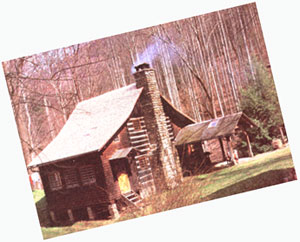 Whether you're looking for an inexpensive first home, a rustically luxurious vacation/hunting/fishing lodge, or a retirement cottage than makes a lasting statement about who you are, master logsmith Peter Gott will-in this manual- teach you the basic techniques you'll need to make that dream come true. |
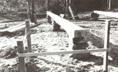 Log structures built on relatively level ground can be perched atop mortared fieldstone pillars extending below frost line. Sill loge rest on the pillars, and the walls go up from there. Batter boards (behind corner pillars) aid in leveling and squaring the foundation. |
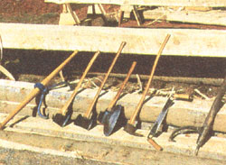 Among the tools of the logsmith's trade are (left to right) timber carrier, common ax, double-bitted ax, broadax, adz, draw knife, and peavey |
|
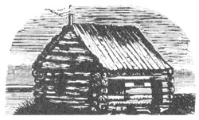 Log cabins are as much a part of America's history and folk tradition as the Fourth of July and Abe Lincoln. But the craft of building with logs has its roots in European soil. |
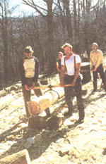 Timber carriers take much of the grunt and strain out of oving large logs. |
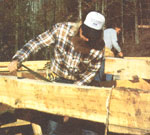 To use a draw knife, stand to one side and pull the tool toward you at a slight angle to the log. Peel through the bark and sapwood, down to solid wood. |
|
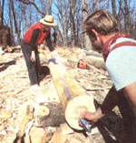 To establish hewing lines, eyeball and chap; a longitudinal centerline, then measure out hall the planned wall-log thickness to either side of the centerline. |
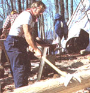 By taking notch measurements from a chalked centerline common to all four logs in a round, and using a couple of straightforward algebraic formulas to calculate notch depths (D and U), you can eliminate all guesswork. |
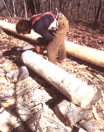 In half-dovetail notches, the top notch slopes down from the inside to the outside face, while the bottom notch slopes up and in from the end. |
|
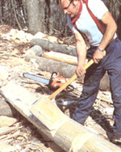 If the math, layout, and saw work have been accurate, corner notches should fit together tight and right. Minor adjustments can be made by running a handsaw between notch faces to remove excess wood. |
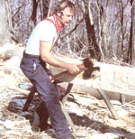 In the formula for figuring rafter length for a 45° (1:1 pitch) roof, X = ridge height above the plate logs, Y = half the exterior length of the tructure's gable ends, and Z is the rafter length being solved for. To determine full rafter length, add the desired eave over hang to the measurement Z derived from the formula. |
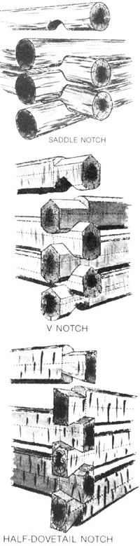 Peter Gott (on bench) demonstrates the balance and temerity required to pin rafter splices together. Locking notches are cut into the plate logs at each point where a rafter crosses. with a chisel or slick. Start the notch cuts with a chain saw, and finish them |
 For chinking, Peter Gott recommends a mortar mix composed of three parts clay, three parts clean sand, and two parts portland cement. Smooth the mortar with a flexible trowel, undercutting the upper edge slightly. After the wood surfaces that will hold the mortar have been dampened (to prevent the dry wood from sucking moisture from the mud), mortar is pushed into the chinking cracks with a trowel. After smoothing, remove the tape. (Mortar stains on logs can be removed with a wire brush.) |
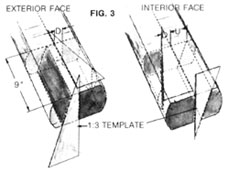 |
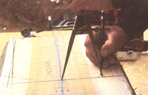 |
|
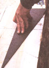 |
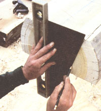 |
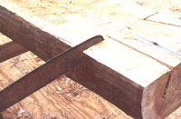 |
|
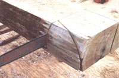 |
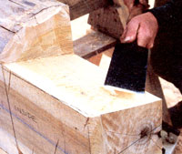 |
 |
|
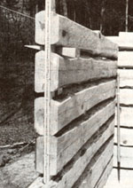 |
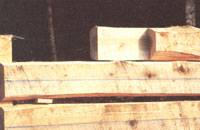 |
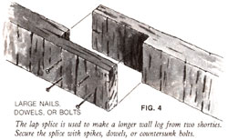 |